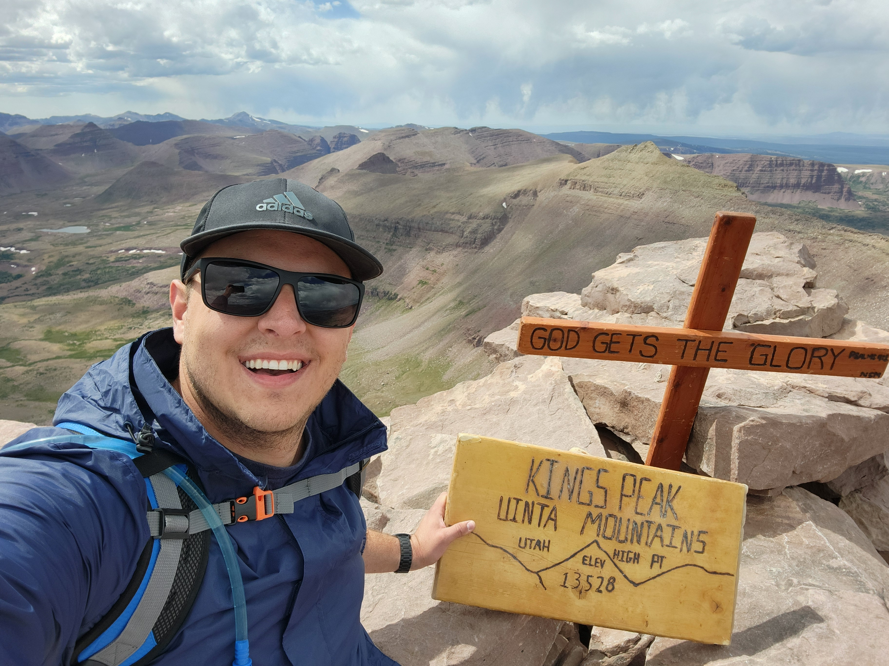

Profile
I work at the intersection of structured investigation and operational security — triaging alerts, tracing process chains, and building the kind of mental models that make threat analysis reliable rather than reactive.
I spent time in a live Fortune 500 SOC, hold an M.S. in Cybersecurity, and am actively building deeper technical specialization through investigation, documentation, and hands-on construction.
Experience
Project Manager I
Managing 30+ concurrent custom product design projects across international enterprise accounts in a regulated environment. Cross-functional execution across nine stakeholder groups from concept through production. cGMP- and ISO-compliant documentation across Salesforce, MasterControl, and Oracle.
SOC Analyst Intern
Operated in a live Fortune 500 SOC. Independently triaged and resolved 100+ phishing, spam, and fraud alerts using Proofpoint, ServiceNow, and VirusTotal. Conducted endpoint investigations alongside senior analysts — analyzing CrowdStrike detections and correlating Splunk telemetry to assess threat activity.
Customer Operations & Support Specialist I
Managed 80+ U.S. enterprise accounts and independently supported the full APAC region. Negotiated shipment timing and fulfillment adjustments that accelerated $25M+ in revenue. Trained and onboarded two new hires; standardized official workflow documentation.
Retention Specialist · Trainer · Quality Auditor
92% retention rate on high-risk cancellations. Promoted into training and quality assurance — coaching new hires and auditing corporate resolution calls.
Sales Representative
Door-to-door pest control sales. Built real tolerance for rejection, adapted communication on the fly, and learned what it takes to earn a stranger's trust quickly.
Two-Year Mission — Philippines
Full-time volunteer service in the Philippines. Gained deep fluency in Tagalog, taught and worked within communities, and advanced to a leadership role coordinating 200+ volunteers in daily operations and disaster response. Structured daily discipline, independent problem-solving, and sustained long-term commitment.
Local Tree Nursery
Planted and maintained stock, helped customers select plants, and learned more about horticultural systems than I expected to. Mostly I learned how to listen to what someone actually needs versus what they think they want.
Farm & Manual Labor
Moving sprinkler pipe, hauling rocks, concrete work, odd jobs for neighboring farmers and community members. Started young, never minded it. Cherry Peak ski resort in the winters.
Current Focus
01
Security Operations
Alert triage, incident escalation, and SOC workflow in enterprise environments.
02
Endpoint Investigations
CrowdStrike detections, process ancestry analysis, and endpoint telemetry correlation.
03
Detection Engineering
LOLBIN behavior, execution chain patterns, and detection logic construction.
04
Cloud Alert Analysis
Cloud-native detection surfaces, authentication anomalies, and credential exposure triage.
05
Systems Thinking
Building mental models for threat analysis that hold up under pressure.
06
Process Analysis
Parent-child process trees, execution paths, and separating noise from signal.
Featured Project
Projects / Visualization
Windows Process Tree Investigation Environment
An interactive process tree tool modeled after CrowdStrike Falcon's endpoint investigation interface. Simulates realistic execution chains including LOLBIN abuse, PowerShell anomalies, Office macro launches, and malicious parent-child relationships — with analyst annotations and timeline overlays. Built to understand endpoint forensics by constructing it from the ground up.
View Projects →Education & Certifications
M.S. Cybersecurity & Information Assurance
Western Governors University · Feb 2026
Cybersecurity Excellence Award — Capstone Project
B.S. Technology Systems — Cybersecurity Emphasis
Utah State University · Aug 2023
Minor in Criminal Justice
- CompTIA CySA+ — Cybersecurity Analyst
- CompTIA PenTest+ — Penetration Testing
- CompTIA Tech+ — Foundational IT
Beyond Security

Kings Peak, Uinta Mountains — 13,528 ft
I grew up in northern Utah — Cache Valley specifically — around farms, mountains, and neighbors who put you to work without much ceremony. I started hauling rocks and moving sprinkler pipe around 14. Nobody called it character building. It was just what you did.
I worked at a local tree nursery through high school, ran a ski resort lift at Cherry Peak in the winters, did concrete and handyman work when there was work to do. I spent two years in the Philippines as a volunteer, learned Tagalog, and came back with a better understanding of people than I had left with.
Outside of work I fish when I can, play guitar badly, read more than I probably should, and spend most of my time with my wife, our two boys, and our dog Rossi. The mountains are still close. I get up there when life allows.
Kings Peak is Utah's high point. I made it up there once. It's a long day, but it's worth it.
Contact
Open to full-time SOC analyst roles and security operations opportunities. Reachable via email or LinkedIn.